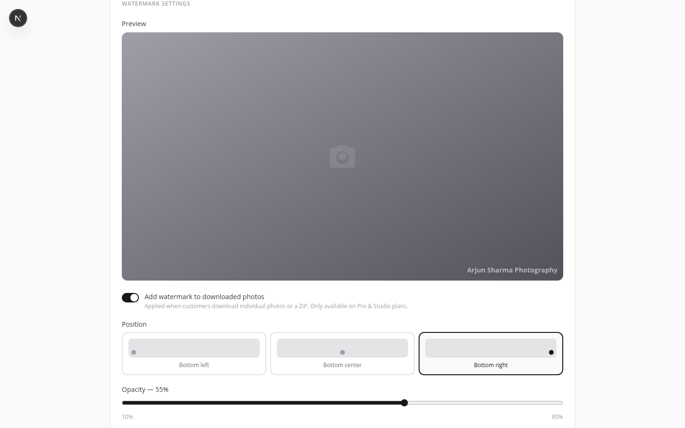

How Watermarking Works
When a client downloads a photo — individually from the lightbox or as part of a ZIP — the request goes through a PhotoHouse server endpoint. Before streaming the file, the server:
-
Fetches the original photo from S3
The untouched, full-resolution image is retrieved from private S3 storage.
-
Fetches your studio logo (or generates SVG text)
If you've uploaded a logo in Studio Branding, it's fetched from S3 and resized to 8% of the image width. If no logo is set, an SVG text watermark is generated using your studio name with a drop-shadow.
-
Composites the watermark using Sharp
The Sharp image library blends the watermark onto the photo at your chosen position and opacity. This happens in memory — no temporary files are written to disk.
-
Streams the watermarked file to the client
The client's browser receives the download. The original file in S3 is unchanged.

Setting Up Your Watermark
Go to Dashboard → Profile → Watermark Settings to configure your watermark.
Enable / disable
Toggle Add watermark to downloaded photos to turn watermarking on or off globally. When disabled, all downloads are served as-is — no watermark applied.
Position
Choose where the watermark appears on the image. The three options are demonstrated below:
Opacity
Drag the opacity slider between 10% and 80%:
- 10–25% — very subtle, barely visible on busy backgrounds. Good when you want brand presence without obstructing the image.
- 40–60% — the recommended range. Clearly visible but not distracting. The default is 55%.
- 70–80% — strong brand stamp. Use when maximum visibility is more important than aesthetics — e.g. proofing galleries before final delivery.
Logo watermark vs. text watermark
Logo watermark — used automatically when a logo is uploaded in Studio Branding. The logo is resized proportionally to 8% of the photo's width and composited at the chosen position. A transparent-background PNG produces the cleanest result.
Text watermark — the fallback when no logo is uploaded, or if the logo fetch fails. An SVG is generated containing your studio name in a readable font with a subtle drop-shadow that keeps the text legible on both light and dark photo backgrounds.
A white logo on a transparent background works on both light and dark photos. Avoid logos with coloured backgrounds — they produce a rectangle over the image rather than a clean mark.
Live preview
The preview panel in Watermark Settings updates in real time as you adjust position and opacity. It's a CSS simulation — your studio name or logo appears at the chosen position over a gradient placeholder. The actual Sharp-composited result on real photos will be slightly different depending on image dimensions and background colour, but the preview gives you a close approximation.
When Watermarks Are Applied
The watermark is applied whenever a photo leaves the PhotoHouse server heading to a client. Specifically:
- Individual photo downloads — when a client clicks the download button in the photo lightbox of a shared gallery.
- ZIP downloads — when a client clicks Download All in the gallery. Every photo in the ZIP is watermarked before the archive is assembled.
- Client selection ZIPs — when you click Download All Selections on the Selections page, the downloaded ZIP contains watermarked copies of the selected photos.
When watermarks are NOT applied
- Your photographer view — photos viewed in the dashboard event page and lightbox are served via CloudFront signed URLs directly. No watermark is applied when you browse your own event.
- Thumbnail grid images — the photo grid in both the dashboard and client gallery uses thumbnails, not full-resolution downloads. Thumbnails are never watermarked.
- Free plan accounts — watermarking is a Pro/Studio feature. Free accounts serve all downloads without any watermark regardless of the toggle setting.
Plan Requirements
Watermarking is available on Pro and Studio plans only.
| Feature | Free | Pro | Studio |
|---|---|---|---|
| Logo watermark | ✗ | ✓ | ✓ |
| Text watermark (fallback) | ✗ | ✓ | ✓ |
| Custom position | ✗ | ✓ | ✓ |
| Custom opacity | ✗ | ✓ | ✓ |
On Free accounts, the watermark toggle in Profile is visible but cannot be saved. Clicking it shows an upgrade prompt. See Billing & Plans to compare plans.